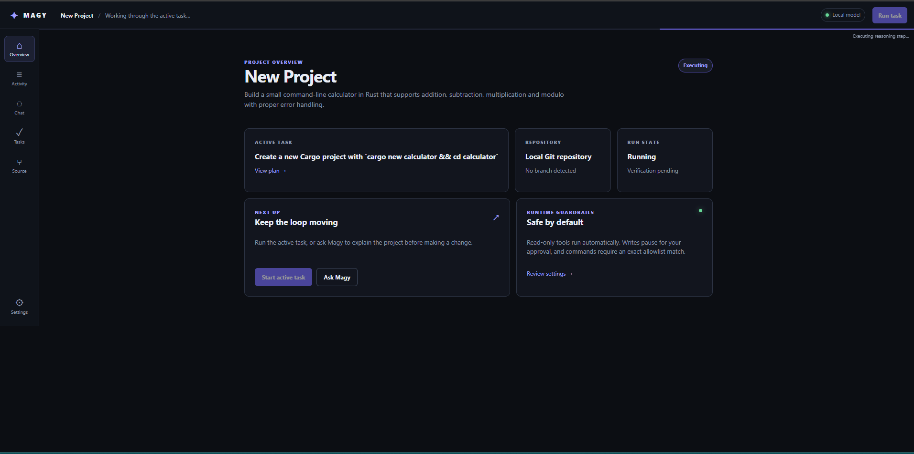
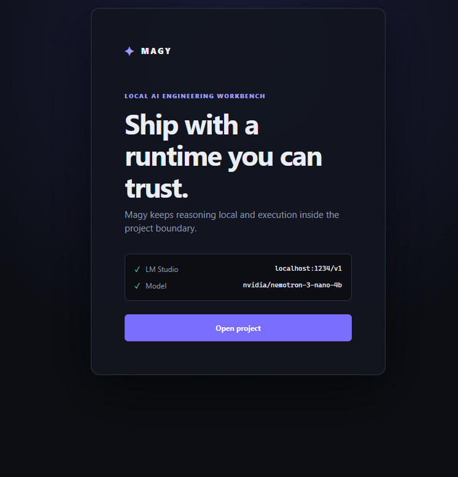
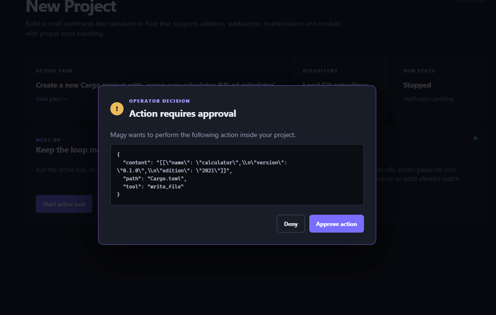

THE MODEL REASONS
Magy uses a provider interface so local model backends can interpret the task without owning the project directly.
A local AI software engineering system where a Planner proposes architecture, an Executor handles bounded tasks, and the runtime verifies the result.
Magy separates project architecture from bounded task execution. The Planner can decompose a goal, the Executor can request work for one task, and the runtime controls what is read, changed, and executed inside the selected project. MAGY is an AEOWUN system. AI is not the common denominator of AEOWUN.
These are working screens from the current local build, not concept art. Magy makes the model state, project state, and operator decision visible.



A guided Magy demo is being prepared. It will show project setup, the dual-model Planner/Executor boundary, approval, tool execution, and verification from one local run.
NO PUBLIC DEMO LINK YETMagy uses a provider interface so local model backends can interpret the task without owning the project directly.
Tool calls are interpreted by the runtime. Read-only work can run automatically; restricted writes and commands require operator approval.
After changes, Magy runs a verification command and feeds objective failure output back into the loop instead of declaring success early.
USER ↓ MAGY APP ↓ COORDINATOR ─── PROJECT STATE ↓ AGENT ─── MODEL ↓ CONTROLLED TOOLS ↓ RUNTIME ↓ PROJECT
Magy is built around a simple promise: intelligence may propose, but evidence decides whether the work is complete.
Load a project and describe the outcome you want.
The model reasons about the project and suggests an action.
Restricted writes and commands stop for operator review.
The runtime checks the result before the task can be complete.
Magy is an active engineering project. It currently expects a local OpenAI-compatible model server, such as LM Studio, and is not presented as a finished hosted service. The goal is dependable local development assistance with explicit boundaries—not an autonomous replacement for an engineer.
Magy does not guarantee that a model is correct, silently approve dangerous actions, replace independent review, or treat a model’s completion message as proof. Verification still depends on the project’s configured checks and the quality of its acceptance criteria.